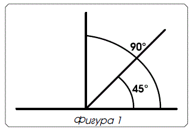
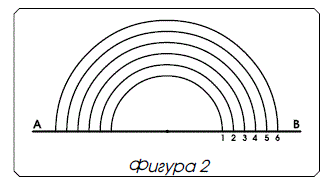

Беседа 590 от 3877 · Беинса Дуно
Развитие на мозъчните центрове
Fir - fur - fen.
Tau - bi - aumen.
Размишление.
Чете се резюме на темата „Първата мисъл, родена в човешкия ум".
За следния път пишете върху темата „Ползата от реките, моретата и океаните".
Често се говори за еволюция на човека, за еволюция на всичко в света. Думата еволюция подразбира движение, развитие, което има посока отдолу нагоре и отзад напред. Това движение се забелязва при развитието на всички живи същества. Запример, като изучавате змията, ще видите, че главата й е сраснала с гръбначния стълб и образува права линия без никакво отклонение.

Казват за някого, че е двуличен човек. Какво означава думата двуличен? Това значи човек с две лица: едното лице е отпред, както у хората, а другото лице е отзад, както у животните. Следователно, такъв човек се проявява ту като човек, ту като животно, вследствие на което не може да се разчита на него. Човек се отличава от животните освен по теглото на главния и гръбначния си мозък, още и по формата и големината на лицето. Човек има такова чело, каквото никое животно няма. По големината, по формата и по развитието на мозъчните центрове отпред на челото се съди за човешката интелигентност. Човек се различава от животните не само по количеството на мозъка си, но и по качеството. Той е създаден при съвършено особени астрологически съчетания от тия, при които животните са създадени. С други думи казано, при създаването си човек е минал през специална врата, за да слезе на земята. При процеса на развитието си ембриото на човека е минало в утробата на майката през около 400-500 хиляди форми по-ниски от него, докато дойде до човешката форма. Днес формата на човека е най-съвършената, в която се е проявил животът на земята. Над човешката форма има още много форми, през които човек в бъдеще ще минава. Засега обаче той трябва да развива своя мозък, да го приготвя за бъдещите условия. При днешното устройство на човешкия организъм тялото е подложено на големи промени. Една тежка болест е в състояние да отнеме от теглото на човека повече от 20-30 килограма, но от теглото на мозъка — почти нищо. Най-устойчивото вещество в целия човешки организъм е това на мозъка.
И тъй, най-ценното нещо в човешкия организъм е мозъкът. За тази цел човек трябва да владее мозъка си, т.е. да познава законите, които го управляват, за да може разумно да се ползва от неговата енергия. Мозъкът е голямо динамо на сили, на електрическа енергия, която изпраща по целия организъм. Ако знае правилно да се ползва от тази енергия, човек би могъл сам да се лекува. Вярата, надеждата, милосърдието, благоговението, както и моралните чувства в човека са положителни величини, които имат мястото си в известни центрове, в известни области на мозъка. Който знае как да се ползва от тях, той сам ще се увери в тяхното добро въздействие върху човека. Други някои чувства пък, като предпазливост и страх, са отрицателни величини. Освен положителни и отрицателни чувства, в мозъка има още много центрове, някои от които са едновременно и положителни, и отрицателни. Такива са, запример, съвест, самоуважение, общителност и други.
Освен споменатите чувства и способности в човешката глава има още много такива: разрушителност, сравнение, съвест и др. Когато човек има силно критичен ум и силно развито разрушително чувство, той се проявява в живота като голям разрушител. Каквото препятствие срещне на пътя си, той иска да го разруши, да го премахне. Човек, у когото е развит центърът на сравнението, каквито препятствия срещне в живота си, той ще ги премахне с разума си. Дълго време ще мисли и след това ще действа. Когато центърът на сравнението е добре развит в човека, той съпоставя нещата, изучава ги внимателно и тогава се произнася. Щом се натъкне на две различни идеи, той започва да ги сравнява, да ги съпоставя и тогава само или и двете отхвърля или приема, или само едната от тях приема, а другата отхвърля. Когато разсъдителните способности в човека са развити, той обича да търси причините на нещата, а оттам се ориентира и върху последствията им. Силно развитото чувство на предпазливост ражда в човека страх. В животинското царство страхът е закон, който регулира отношенията. Там слабият се спасява с бягане. Колкото краката му са по-дълги и може да бяга, толкова по-добре за него. За да се развие това чувство у животните, това показва, че условията на живота им не са били благоприятни. Страхът у животните е страж, който ги пази от опасности, на които могат да се натъкнат. Не е добре, когато това чувство у човека се развие чрезмерно. Когато съвестта е силно развита, а разумът — слабо развит, човек става голям фанатик. Когато моралните чувства са добре развити, а разсъдителните способности слабо развити — човек пак става фанатик.
И тъй, понеже у съвременните хора мозъчните центрове не са развити хармонично, те не могат правилно да възприемат енергиите, които слизат от висшите светове, вследствие на което мислите, чувствата и действията им са неправилни. Когато моралните чувства се развиват добре, главата на човека расте нагоре и приема красива форма във вид на кубе. Когато физическите чувства — запример чувството на самозапазване, се развиват много, главата на човека расте на широчина. Когато обществените чувства в човека са развити чрезмерно, главата расте отзад. Ако чувството на самозапазване и обществените или тъй наречените домашни чувства са силно развити, движението е наляво, т.е. главата на човека се развива повече в лявата си страна, вследствие на което моралните чувства са слабо развити. За да се даде ход на моралните чувства, трябва да се даде насока на движението на кръвта първо нагоре, а после надясно. Който иска да развие разсъдителните способности в себе си, той трябва да мисли върху причините на нещата. Изобщо, съвременната наука се сили по различни начини да развие в човека всички мозъчни центрове хармонично, за да прояви той своите дарби и способности.
Сега, като ученици работете съзнателно да регулирате чувствата си. Чувствата ви трябва да се уравновесят, да бъдат хармонични помежду си. Ако личните ви чувства са силно развити, регулирайте ги. Ако моралните чувства и разсъдителните ви способности са слабо развити, работете върху тях, за да ги засилите. Някой казва: Срам ме е да лъжа. Това не ми подхожда. Лъжата уронва моето достойнство, моята чест. В случая този човек изхожда от своите полуморални чувства. Той живее в свят, дето сам е център. Обаче, когато някой каже, че не е право да постъпва по еди-какъв си начин, безразлично дали е в негова полза или вреда, той изхожда от своите морални чувства, от един възвишен свят.

Същият закон се отнася и към всеки човек индивидуално. Прилагайте този закон във вашия личен живот да видите колко лесно ще разрешавате въпросите си. Представете си, че някой ви обиди. Ако обидата засегне вашите лични чувства, вие веднага ще се настроите срещу този човек и ще кажете: Всичко мога да направя, но никога няма да му простя за обидата, която ми нанесе. Ако не простите, какво ще спечелите? Друг някой пък ще се обиди на вас и няма да ви прости. Трети някой ще се обиди на втория, няма да му прости и т.н. Какво ще спечелите? — Нищо няма да спечелите, но ще се образува редица от обидени хора, на които личните чувства са засегнати. При това положение на нещата ще дойде някой да се хвали, че е благороден човек, че лесно прощава. — Как прощава? — Като плати този човек дълга си с лихвите отгоре. Това не е прощаване. Така всеки прощава! Прошката не е произволен процес. Тя излиза от един възвишен свят, мястото на който е в горната част на човешката глава.
Защо човек трябва да прощава? — Защото всяка обида, която някой ви е нанесъл, съзнателно или несъзнателно, има за цел да ви предпази от някакво зло, което предстои да минете. Представете си, че някой върже ръцете и краката ви, а на гърба ви тури един чувал, който съдържа 500 кг. злато. В това положение ви поставя в лодка и пуща лодката във водата. Какво ще стане с вас? Едва ще изминете 10-20 м над водата и лодката ще потъне на известна дълбочина. Обаче в този момент един крадец се спуща подир лодката, бързо разрязва въжето на ръцете и краката ви, взима чувала със златото и ви тласка към повърхността на водата. Вие излизате благополучно на брега и се радвате на новия живот. Ще се сърдите ли на крадеца, задето е взел торбата със златото? Няма защо да му се сърдите. Торбата със златото ще бъде неговата заплата, понеже ви е спасил от удавяне. Това са морални разсъждения, с които трябва да си служите, когато искате да трансформирате състоянията си, да превърнете например, обидата в благо за вашата душа. Тази е новата култура, която човечеството трябва да възприеме. Новите идеи, новите схващания дават възможност на ученика да различава своето състояние или своето разбиране от чуждото.
Каква е разликата, например, между гъсеницата и пеперудата? Гъсеницата и пеперудата се различават в начина на яденето. Гъсеницата яде много и лакомо, а пеперудата — малко и скромно. Тази е причината, поради която всеки може да стъпче гъсеницата. Кой може да стъпче пеперудата? — Никой. Тя има крилца, хвърка от цвят на цвят и сладък сок смуче с хоботчето си. След нея дохожда втора, трета, десета пеперуда и всички смучат от същия цвят. Значи 20 пеперудки най-малко могат да се нахранят от сока на един цвят, когато една гъсеница не би се нахранила и от 20 цвята даже. Страшна, разрушителна сила е лакомството. Такова нещо представляват някои човешки желания. Те са ненаситни като гъсеницата. Когато съзнае това, човек трябва да трансформира ония сили в своя организъм, които събуждат ненаситни желания в него. От сили, от енергии на гъсеница той трябва да ги превърне в енергии на пеперуда, която се задоволява със сладкия сок на цветовете. Животът на гъсеницата може да се уподоби на материалистичния живот на човека, а животът на пеперудата — на духовния му живот. В пеперудата е развит интелектът. Това се вижда по нейната дрешка. Приятно е да гледа човек крилцата на пеперудата. На такава малка площ, толкова цветове, толкова шарки, правилно, хармонично съчетани и поставени на своето място.
И тъй, трябва да знаете, че в морално отношение всяка мисъл упражнява влияние върху бъдещите форми, които ще се създадат. Ето защо, каквито мисли и да дойдат в ума ви, стремете се да бъдете вътрешно спокойни. Колкото отрицателни мисли да ви посетят, не се смущавайте. Човек трябва да придобие такова самообладание, че и с игла да се боде, да не трепва, да седи тих и спокоен, като че нищо не става с него. В това отношение животът благоприятства на съвременните хора. Условията им са толкова променчиви, че без да иска човек ще развие самообладание. Днес срещате един богат човек, доволен от положението си — утре го виждате беден, нещастен. Днес е разположен, с голям импулс за работа — утре го срещате неразположен, обезсърчен, не намира смисъл в живота. Тези смени в условията стават с цел да се изпита човек, да се познае, да види до каква степен на развитие е достигнал. Ако донякъде е придобил самообладание, той ще погледне на живота трезво, със спокойствие. Ако не е придобил самообладание, ще се уплаши, ще се отчае от живота. Изкуство е, след като изгуби човек всичко, което е придобил в живота си, да се опре на своите способности и чувства и да каже: Щом имам ум, сърце и воля, от нищо не се боя. Това значи силен човек. Това значи човек с убеждение.
Трима души пътуват заедно и замръкват в едно непознато село. Решават да похлопат на първата къща в селото, да пренощуват там. Първият пътник хлопа. — Кой там? — Моля, закъснял пътник съм, отворете ми да пренощувам във вашия дом. — Не може, късно е вече. По това време не отваряме на никого. Вторият пътник хлопа: Моля, отворете ми да си почина и да пренощувам при вас. — Не може, не приемаме непознати пътници. Третият пътник хлопа: Моля, отворете да се подслоним във вашия дом. Те веднага излизат и приемат гостите. Защо не отвориха на първите двама, а на последния отвориха? За да си обясните причините на това явление, ще ви приведа следния пример. Трима души пътуват и настигат една празна кола. Първият пътник се обръща към коларя с думите: Слушай, аз съм беден човек, мога ли да се кача в колата ти да си почина малко? — Не може. Вторият моли коларя за същото нещо, но и той получава отказ. Третият пътник изважда от джоба си един наполеон, показва го на коларя и го пита: Можеш ли да ни качиш на колата си? — Мога, качете се. Кое е накарало коларя да вземе пътниците на колата си? — Златната монета. Такова нещо се е съдържало в гласа и хлопането на третия пътник, за да се съгласят селяните да му отворят и да го приемат в дома си. Следователно има разлика в хлопането, има разлика в говора и думите на хората. Затова е казано в пословицата: „Блага дума желязна врата отваря".
Ще ви приведа още един пример, за да разберете какво представлява благата дума, да видите нейната сила. Трима души взимат инструментите си и тръгват на път. Единият носи гайда, вторият — тъпан, а третият — цигулка. Късно вечерта стигат в едно село и спират пред къщата на един богаташ. Първият пътник изважда гайдата си и започва да свири. Господарят се събужда от сън, чува пищенето на гайдата и веднага изпраща слугите си да изпъдят този гайдарджия. След малко тъпанджията започва да удря своя тъпан, мисли, че ще му отворят. Слугите излизат вън, започват да го пъдят, като му казват, че господарят иска спокойствие, не му се слуша нито гайда, нито тъпан. Най-после третият пътник изважда цигулката си и започва да свири тихо, нежно. Богатият господар става от леглото, вслушва се и започва да се облича. Свиренето продължава. Той отива към прозореца, отваря го и вижда, че един цигулар, млад момък свири. Той веднага заповядва на слугите си да поканят цигуларя горе да им посвири. В това време жената и децата стават, обличат се и влизат в стаята да слушат младия цигулар. Значи, в дадения случай цигулката е благата дума, която отваря сърцето на хората и влиза в дома им на гости. Докато човек прилага в живота си своите груби чувства и наклонности, той всякога ще бъде пъден — никоя врата няма да му се отвори. Приложи ли нежните звуци на своята цигулка, т.е. приложи ли моралните си чувства в своя живот, всяка врата ще му се отвори, всеки дом ще го приеме с думите: Добре дошъл!
Следователно, докато човек не знае кога с какви чувства и способности да си служи, той всякога ще страда. Страданията на съвременните хора се дължат на излишна енергия в техния организъм, с която не могат да се справят. Енергията им не е еднакво разпределена по всички техни удове, вследствие на което някои органи, някои центрове страдат от излишък, а други от недоимък. Същото се забелязва и в мозъчните центрове. Някои мозъчни центрове са силно активни, вследствие на събралата се в тях излишна енергия. Достатъчно е най-слабото докосване до един от тези центрове, за да се про-изведе взрив. У някои хора се събира излишна енергия в центровете при ушите. Щом се предизвика нахлуване на кръв в тия центрове, те веднага избухват. За такива хора се препоръчва мотика — да копаят, да изпратят част от тази енергия в земята. Като срещнете такъв човек или трябва да го отбегнете, или да бъдете много внимателни с него. Много методи има за трансформиране на енергиите в човешкия организъм. Като ученици вие ще изучавате тези методи и ще ги прилагате. Представете си, че сте прекарали голямо нещастие и се отчаяте от живота, искате да се самоубиете, да се хвърлите от някоя висока канара — това е състояние, което се дължи на някаква кармическа причина. Не бързайте, не се отчайвайте, но мислете защо идват в ума ви такива мрачни мисли и потърсете начин да смените състоянието си.
Един млад момък се отчаял от живота и решил да се самоубие. Качил се на една висока канара и решил да се хвърли от тази височина да се убие. Докато решавал този въпрос, дожаляло му за живота, за младостта му и започнал да плаче. Защо плаче? — Много просто. Това състояние не е негово. Той преживява състоянието на някой умрял, когото в миналото някога е бутнал от такава канара и го убил. Духът на умрелия иска да му отмъсти, да го застави той сам да се хвърли от канарата, да умре по същия начин като него. Като знае това, младият момък трябва да се обърне мислено към духа на заминалия и да му каже: Слушай, братко, не ме заставяй да извърша голяма грешка, от която ни ти, нито аз ще се ползваме. Ето, аз имам тяло, което давам и на твое разположение. Влез в мене да живеем и работим заедно. В моето тяло могат да влязат много души, да образуваме едно голямо съдружие и всички да работим в името на една обща, велика идея, която ще ни повдигне, ще осмисли живота ни.
И тъй, не избягвайте страданията, не избягвайте мрачните мисли, но се учете от тях. Няма по-приятно нещо от това, човек да се справи със своите мрачни и отрицателни състояния. Няма по-велико нещо от това, човек да се справи със своите мъчнотии и страдания и да гледа на живота с радост. Така са прекарвали живота си старите християни. Те са страдали и славели Бога. Каквито страдания да минете, вие трябва да запазите своето достойнство като човек, като ученик. Отвън можете да бъдете слуга, да изпълнявате най-долната служба, но отвътре да бъдете господар. Мнозина външно заемат положението на господари, а вътрешно са слуги. За предпочитане е човек външно да бъде слуга, а вътрешно — господар.
Сега всички хора трябва да работят върху себе си, да се справят със своя песимизъм. Техният песимизъм е подобен на детските състояния. Някое момиченце играе с куклата си. По едно време куклата пада на земята и крачето й се счупва. Момиченцето започва да плаче неутешимо. Щом поправят крачето на куклата, тъгата на момиченцето изчезва. Някое момченце играе с кончето си, но кончето пада на земята и се счупва. Момченцето започва да плаче, изпада в песимизъм. Щом му купят ново конче, песимизмът изчезва. Такъв е песимизмът и на съвременните хора. Не, човек трябва да се анализира, да изследва дълбочината на своите чувства. Каквито и да са чувствата му, той трябва да ги трансформира, да не се поддава на тяхното течение. Какво страшно има в това, че някой изгубил сто хиляди лева? Както ги е изгубил, така ще ги намери. Ще кажат, че се отчаял и щял да се самоубие. Ако за сто хиляди лева човек е готов да се самоубие, той не разбира живота. Животът с нищо не се откупва. Който си позволява да се противи на живота, той ще бъде изхвърлен навън, в бездната, да прецени какво представлява самият живот.
Един млад момък отишъл в чужбина да си търси прехраната. Тук потърсил работа, там потърсил, но никъде не могъл да намери — два-три деня гладувал, нямал пари за хляб. В това време минал покрай една турска гостилница, от която се разнасяли миризми на вкусни ястия. Това силно подразнило апетита му, той дълбоко въздъхнал и си казал: Защо Господ ме остави в това положение? Той не мисли за мене. Силно обезсърчен той отминал гостилницата и продължил пътя си. В това време нещо отвътре му пошепнало: Погледни надолу! Той погледнал надолу и видял на земята половин лев. Бързо взел парите и отишъл в гостилницата да се нахрани. Като се успокоил, благодарил на Господа, че не го оставил да умре от глад. От този момент обаче работите му тръгнали напред.
Човек трябва да се кали в живота. Изпитанията имат предвид да калят човека, да го заставят да учи, да работи, да разбере дълбокия смисъл на живота. Като работи върху себе си, той ще развие моралните си чувства, в които няма никаква апатия, никакво обезсърчение. Докато се обезсърчавате, вие сте на физическия свят, вие живеете в своите лични чувства. Щом се обезсърчите, четете живота на великите хора, да видите през какви големи изпитания са минали. Ако не ви се работи, изучавайте Толстой. Той дава подтик към труд. Каквото и да правите, от всички се изисква усилия, труд и работа. Когато се обезсърчите и не ви се живее, ето какво трябва да направите: излезте вън и наблюдавайте небето. Свържете се с онзи свят над вас и помислете за разумните същества, които работят неуморно върху вас, без никакво възнаграждение и благодарност от ваша страна. Излизайте вечер вън да наблюдавате звездите, луната, да видите колко е велик светът и какво ви предстои да изучавате. Ако нощта е мрачна, бурна, идете на близката до вас планина, там да изпитате величието на природата. Правете различни опити, различни упражнения да трансформирате състоянията си. Целта на опитите, на упражненията е да ви поставят в положение да изживеете нещо по-силно от вашето обезсърчение. Какво по-силно, по-велико от това да се свържете с живата природа, с разумния свят, с Бога! Вие трябва да бъдете смели, решителни, да понасяте трудностите в живота. Като лекува хората от техните обезсърчения, природата ги поставя пред големи изненади. На сън или в будно състояние, тя често им устройва такива засади, че те забравят и отчаяние, и обезсърчение и са готови да живеят при най-мъчни условия. Някой намислил да напакости на своя ближен. Обаче вечерта сънува, че неприятели го гонят и измъчват. Той се бори, бяга, едва се спасява. Като стане сутринта окончателно изменя решението си да отмъщава, да пакости на ближния си. Той е станал мек, внимателен, пази се да не увреди някого. Като разбере цената на живота, той влиза в правия път, в пътя на доброто.
Упражнение. Представете си мислено следната картина. В лунна, светла нощ се качвате на висок планински връх. Като стигнете върха, ще намерите една висока канара, ще седнете върху нея и ще почнете да размишлявате, да наблюдавате небето. Както седите, по небето се явяват малки облачета, които постепенно растат, стават големи, черни облаци и покриват целия хоризонт пред вас — не се вижда вече луната, не се виждат никакви звезди. Седите неподвижно на канарата, силно концентрирани в мисълта си и в това време, далеч някъде, виждате на хоризонта малка светлинка. Небето се отваря, облаците се разсейват, зората се пуква, и след малко слънцето подава своята пурпурна златна главица.
Упражнението трябва да трае всичко пет минути.
Fir - fur - fen.
Tau - bi - aumen.
19-та лекция от Учителя,
държана на 28 февруари 1923 г., София
Добри навици (Младежки окултен клас. Година II (1922–1923). Том II. София, 1936)
16 беседи от 7 февруари 1923 г. до 27 юни 1923 г.